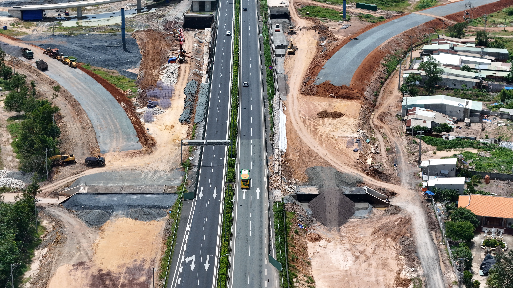

We clarify the brief, review site conditions and identify the requirements and priorities that will shape the work.
Infrastructure Projects
We support civil and infrastructure projects with site preparation, development works and construction coordination. Our approach is practical, organised and focused on delivering assets that meet project needs and stand up to use.
Discuss a project ↗OverviewCapability in detail.
Capability in detail.
Purpose in every project.
Infrastructure work depends on sound planning and coordination at every stage. We bring a practical approach to site readiness, civil works and execution, aligning teams and resources to project requirements.
Our approach is grounded in understanding the site, setting clear priorities, coordinating resources and maintaining a steady focus on quality, safety and delivery.
Key capabilitiesCapabilities built for
Capabilities built for
real work.
Our capabilities are grounded in practical site experience. We bring the right people, equipment and methods together to manage complex work and deliver with care.
01
Civil works
We deliver civil works that form the foundations of infrastructure, with attention to site conditions, specifications and quality.
02
construction coordination
We align contractors, activities, materials and timelines to keep construction work organised and moving.
03
site development
We prepare and develop sites through coordinated earthworks, access and supporting infrastructure.
04
project execution and delivery
We manage project activities from mobilisation through completion, with clear communication and accountability.

Our delivery approachClear priorities.
Clear priorities.
Coordinated action.
We clarify the scope and site conditions, build a practical work plan, coordinate resources and manage execution. Regular communication and clear accountability help keep progress, quality and safety aligned.
We set the sequence, align people and resources, and establish a practical plan for the site.
We coordinate activities, respond to site realities and keep quality and safety in focus as work progresses.
We complete the work with attention to detail, clear communication and accountability through handover.